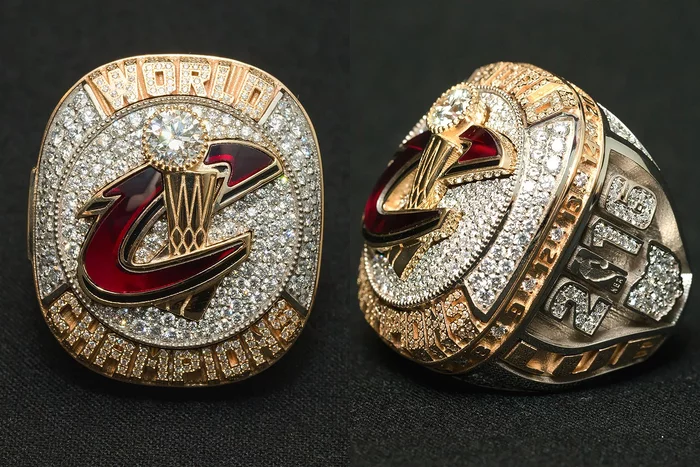
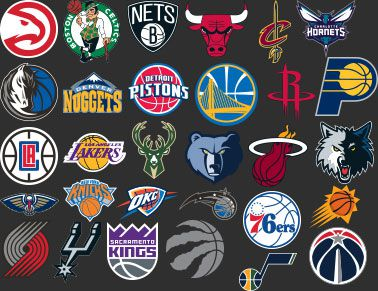
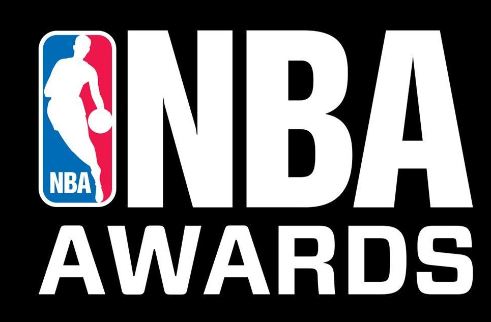
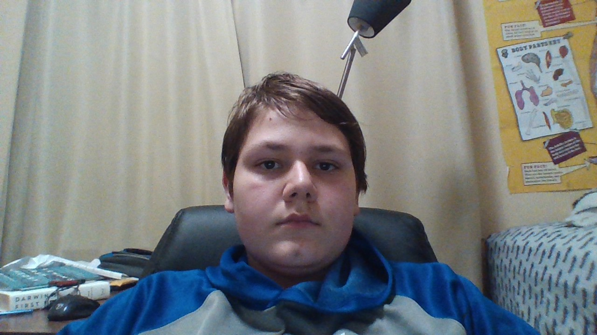

The NBA (National Basketball Association) consists of 30 teams divided up into two 15-team conferences (east and west). The teams are ranked by their number of games won at the end of an 82 game regular season within their respective conferences. The top 8 teams of each conference advance into a bracketed tournament known as the Playoffs, which is at first seperated into conferences, where these top 8 are arranged into brackets where seed 1 faces seed 8, seed 2 faces seed 7 and so on. The winner of each conference then goes on to face the opposing conference's winner, this stage being known as the NBA Finals. All rounds are conducted in 7 game series, where the first team to four wins advances to the next round. Finally, the team that wins the final series between the two conference victors receives the NBA trophy, otherwise known as the Larry O'Brien trophy (click here for more information on the background of this name), a Finals MVP (refer to glossary) is selected and all of the players on the winning team receive a championship ring, which looks something like the following picture, however they do vary year by year (this is the ring the 2016 Cleveland Cavaliers received when they beat the Golden State Warriors in 7 games, in what is regarded as the greatest finals comeback in NBA history).
Image courtesy of http://www.49erswebzone.com/forum/other-sports/186922-the-king-and-his-cavaliers/
Although the basic objective of basketball is rather simple, it has a myriad of rules and regulations by which the players are to adhere to and the referees are to enforce. Firstly, you have to be dribbling the basketball when moving, the only exception being when you pick your dribble up, where you are then allowed to take 2 steps. After this however, you must get rid of the ball (whether it be by passing or shooting), and failure to do so will result in the other team receiving possession of the ball. Additionally, excessive contact between players will result in whats called a foul called on the aggressor in the scenario (what amount of contact is excessive is determined by the officiator, but generally, contact on the arms and fairly heavy body contact will be ruled a foul). If the foul is committed by a player on defense, the team on offense will maintain possession and inbound the ball from the sideline, and if the shot clock (find in glossary) is below 14 seconds, it is reset to 14 seconds, otherwise the amount of time left on the shot clock when play stopped remains as is. If the offensive player is fouled in the act of shooting, that player goes to the free throw line (refer to glossary), where they shoot 2 free throws if they were attempting a 2-point field goal when fouled, or 3 free throws if they were fouled when attempting a three point field goal when fouled. If the shot being attempted when the foul occurs is scored, the basket counts and the person who made the shot can then go to the free throw line for 1 free throw. If the player on offense commits the foul, the defending team receives possession. Finally, when the ball goes out of bounds (beyond the bold black lines 94 by 50 feet in length and width respectively), the team of the player that the ball touched last before going out of bounds loses possession. In order for the ball to be ruled to have gone out it must have bounced out of bounds. There are many rules beyond these 3, however the three listed are the base of the NBA rulebook, and are the most often used in NBA games. Here is the official NBA rulebook.
courtesy of http://www.socimage.com/tag/nbaquestions
There are 7 basic awards achievable in the NBA, 6 for players and 1 for coaches. All of these are handed out at the end of the 82-game regular season with the exception of the Bill Russell Finals MVP which is given at the end of the NBA postseason. The other six awards are Sixth Man of the Year, Defensive Player of the Year, Most Improved Player, Rookie of the Year, Coach of the Year and Most Valuable Player. These are all self explanatory, with the exception of Sixth Man of the Year which refers to the most valuable bench player in the NBA. These used to be announced by the NBA's commissioner in a press conference at the end of the regular season, however in 2017 the NBA had decided to turn this into an award show, like a basketball version of the Oscars, where all of the awards previously listed, plus a myriad of management awards, are presented. The winners of these awards are selected exclusively by fan voting, and votes come in from around the world.
Image courtesy of https://prosportsfandom.com/awards-at-the-all-star-break/
In this section I will be highlighting the top teams in the NBA, in order of skill, as of the 2017-18 NBA season. Thes rankings are entirely my opinion, however team stats, offensive and defensive ratings as well as their records were taken into account in creating this list.
Arion Frakulli is a 15 year old computer science student and NBA enthusiast. He attends Victoria Park CI and hopes you like his website
